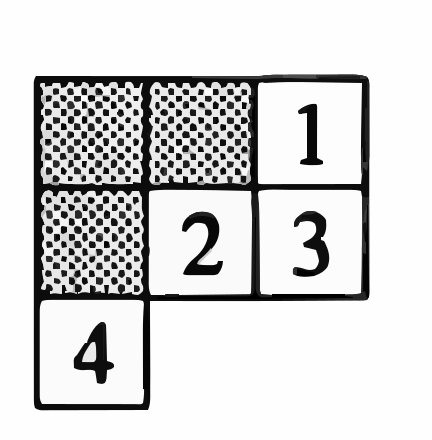

The link of paper: https://arxiv.org/abs/1710.05214
\( F_\pi(r, c) = F(\pi_c^{-1}(r), c) \)
Row sort: For \( F \in F(\lambda, z) \), we define the row-sorting of \( F \), denoted \( \text{rowsort}(F) \), to be the filling that arises from \( F \) by reordering the values within the rows so that they increase weakly.
Let \( \lambda = (\lambda_1, \dots, \lambda_k) \) be a partition, and \( \zeta = (\zeta_1, \dots, \zeta_{\lambda_1}) \) its conjugate partition.
Let \( C(\lambda) \) be the group of sequences of permutations \( \underline{\pi} = (\pi_1, \dots , \pi_{\lambda_1} ) \), where each \( \pi_i \in S_{\zeta_i} \).
We define the rearrangement subset of \( C(\lambda) \) associated to \( F, S \in F(\lambda, z) \) to be the set:
\[ C_{F,S}(\lambda) = \{ \underline{\pi} \in C(\lambda) \mid F_{\underline{\pi}} \text{ and } S \text{ have the same row content} \}. \]Definition 3.1.1. Let \( F, S \in F(\lambda, z) \). We define the rearrangement coefficient associated to these fillings to be:
\[ \mathcal{R}_{F,S} := \sum_{\pi \in C_{F,S}(\lambda)} \text{sgn}(\underline{\pi}) \]Lemma 3.1.3. Let \( F, T, S \in F(\lambda, z) \). Let \( \sigma, \gamma, \sigma', \gamma' \) be fixed elements of \( C(\lambda) \). Suppose that for all \( \pi \in C_{T,S}(\lambda) \), we have \( \sigma \circ \pi \circ \gamma \in C_{F,S}(\lambda) \). Further, suppose for all \( \pi' \in C_{F,S}(\lambda) \), we have \( \sigma' \circ \pi' \circ \gamma' \in C_{T,S}(\lambda) \). Then:
\[ \mathcal{R}_{F,S} = \text{sgn}(\sigma) \cdot \text{sgn}(\gamma) \cdot \mathcal{R}_{T,S} = \text{sgn}(\sigma') \cdot \text{sgn}(\gamma') \cdot \mathcal{R}_{T,S}. \]Lemma 3.1.5. Let \( T \in T(\lambda, z) \) and \( \pi \in C(\lambda) \) such that \( \pi \neq (\text{id}, \ldots, \text{id}) \). If \( S = \text{rowsort}(T_\pi) \), then \( S \succ \text{sort}(T) \).
\[ D_{i_1, \dots, i_p} = \det \begin{bmatrix} Z_{1,i_1} & \dots & Z_{1,i_p} \\ \vdots & \ddots & \vdots \\ Z_{p,i_1} & \dots & Z_{p,i_p} \end{bmatrix} \in R[Z]. \]For \( F \in F(\lambda, z) \), set:
\[ D_F = \prod_{j=1}^{\lambda_1} D_{F(1,j), F(2,j), \dots, F(\zeta_j,j)}. \]Here \( F(i, j) \) simply means the \( (i, j) \)-coordinate of the filling \( F \).
\(\textbf{Exercise 6.19*}\) Much of the story about Young diagrams and representations of symmetric and general linear groups can be generalized to \textit{skew Young diagrams}, which are the differences of two Young diagrams. If \( \lambda \) and \( \mu \) are partitions with \( \mu_i \leq \lambda_i \) for all \( i \), \( \lambda / \mu \) denotes the complement of the Young diagram for \( \mu \) in that of \( \lambda \). For example, if \( \lambda = (3, 3, 1) \) and \( \mu = (2, 1) \), \( \lambda / \mu \) is the numbered part.

\(\textbf{Definition.}\) A bialgebra is a vector space \( B \) over a field \( K \), equipped with both an algebra structure and a coalgebra structure such that the operations are compatible. The \(\textbf{comultiplication}\) is a linear map: \[ \Delta: B \to B \otimes B \] satisfying the following properties:
\(\textbf{Compatibility Conditions in a Bialgebra:}\) In a bialgebra, the comultiplication \( \Delta \) and counit \( \epsilon \) must be algebra homomorphisms:
\(\textbf{Remark:}\) The dual space \( B^* \) of a finite-dimensional bialgebra \( B \) also forms a bialgebra, reflecting the self-dual nature of the structure.
If \(\lambda, \mu \in \mathbb{N}^{\infty}\), we say \(\mu \subseteq \lambda\) if \(\mu_{i} \leqslant \lambda_{i}\) for all \(i \geqslant 1\). Clearly this is equivalent to stating that the diagram of \(\mu\) is contained in that of \(\lambda\). If \(\mu \subseteq \lambda\), we define the skew-shape, \(\Delta_{\lambda / \mu}\), to be \(\Delta_{\mathcal{\lambda}}-\Delta_{\mu}\). Since the sequence \(\lambda-\mu=\) \(\left(\lambda_{1}-\mu_{1}, \lambda_{2}-\mu_{2}, \ldots\right)\) is in \(\mathbb{N}^{\infty}\),
\(\textbf{Definition II.1.4.}\) The image of \(d_{\lambda / \mu}: \Lambda_{\lambda / \mu} F \rightarrow S_{\lambda / \mu} F\) is called the Schur functor of \(F\) with respect to the skew-shape \(\lambda / \mu\), and is denoted by \(L_{\lambda / \mu} F\). The image of \(D_{\lambda / \mu}^{\prime}: D_{\lambda / \mu} F \rightarrow \Lambda_{\lambda / \mu} F\) is called the coSchur functor of \(F\) with respect to the skew-shape \(\lambda / \mu\), and is denoted by \(K_{\lambda / \mu} F\).
\(\textbf{Definition II.2.1.}\) Let \(S\) be a totally ordered set, let \(\lambda\) and \(\mu\) be partitions with \(\mu \subseteq \lambda\), and let \(\Delta_{\lambda / \mu}\) be the skew-shape associated to this pair. A tableau of shape \(\lambda / \mu\) with values in the set \(S\) is a function from \(\Delta_{\lambda / \mu}\) to \(S\). The set of all such tableaux is denoted by \(\operatorname{Tab}_{\lambda / \mu}(S)\).
We may choose \(S\) to be the ordered basis \(\left\{x_{1}, \ldots, x_{n}\right\}\) of our free module \(F\). If \(X=X_{I_{1}} \otimes \cdots \otimes X_{I_{q}}\) is a basis element of \(\Lambda_{\lambda / \mu} F\), we have the tableau \(T_{X}: \Delta_{\mathcal{\lambda} / \mu} \rightarrow\left\{x_{1}, \ldots, x_{n}\right\}\) defined as follows: \[ T_{X}(i, j)=x_{\alpha_{i j}}, \] where \(j^{\prime}=j-\mu_{i}\) and where \(I_{i}=\left(\alpha_{i 1}, \ldots, \alpha_{i v_{i}}\right)\) with \(v_{i}=\lambda_{i}-\mu_{i}\).
\(\textbf{Definition I.1.7.}\) Let \(A\) be an \(R\)-Hopf algebra. Define an \(R\)-map \(\square_{A}\) : \(A \otimes A \rightarrow A \otimes A\) to be the composition \(A \otimes A \rightarrow^{\Delta \otimes 1} A \otimes A \otimes A \rightarrow{ }^{1 \otimes m} A \otimes A\). Similarly, define \(\tilde{\mathrm{D}}_{A}: A \otimes A \rightarrow A \otimes A\) to be the composition \(A \otimes A \rightarrow{ }^{1 \otimes \Delta} A \otimes\) \(A \otimes A \rightarrow^{m \otimes 1} A \otimes A\).
In II. 2 we prove that the Schur functors \(L_{\lambda / \mu}(-)\) are universally free (polynomial) functors. The proof involves finding a "generators and relations" description of \(L_{\lambda / \mu}(F)\) in terms of exterior powers and utilizing this description to construct a standard basis of \(L_{\lambda / \mu}(F)\) from Young tableaux. The generators and relations developed here are used heavily throughout the paper, especially for the purpose of defining maps on Schur functors. In the case \(\lambda=\left(\lambda_{1}, \lambda_{2}\right), \mu=\left(\mu_{1}, \mu_{2}\right)\), the Schur functor \(L_{\lambda / \mu}(F)\) is described as the cokernel of a natural map \(\square_{\left(\lambda_{1}, \lambda_{2}\right) /\left(\mu_{1}, \mu_{2}\right)}\) : \[ \square_{\left(\lambda_{1}, \lambda_{2}\right) /\left(\mu_{1}, \mu_{2}\right)}: \sum_{t=\mu_{1}-\mu_{2}+1}^{\lambda_{2}-\mu_{2}} \Lambda^{\lambda_{1}-\mu_{1}+t}(F) \otimes \Lambda^{\lambda_{2}-\mu_{2}-t}(F) \rightarrow \Lambda^{\lambda_{1}-\mu_{1}}(F) \otimes \Lambda^{\lambda_{2}-\mu_{2}}(F) \]
\(\textbf{Definition II.2.12.}\) For partitions \(\mu \subset \lambda\), define \(\bar{L}_{\lambda / \mu}(F)\) to be the cokernel of the map \(\square_{\lambda / \mu}\).
Reference. Schur Functions and Schur Complexes Page.230
\(\textbf{Theorem II 2.16.}\) Let \( \lambda = (\lambda_1, \ldots, \lambda_q) \), \( \mu = (\mu_1, \ldots, \mu_q) \) be partitions with \( \mu \subset \lambda \), and let \( F \) be a free module with ordered basis \( \{x_1, \ldots, x_n\} \). Then \( \{d_{\lambda / \mu}(X_T) \mid T \text{ is a standard tableau in } \operatorname{Tab}_{\lambda / \mu} \{x_1, \ldots, x_n\}\} \) is a free basis for \( L_{\lambda / \mu}(F) \), and the map \( \theta_{\lambda / \mu} : \overline{L}_{\lambda / \mu}(F) \rightarrow L_{\lambda / \mu}(F) \) is an isomorphism. Hence \( L_{\lambda / \mu}(F) \) is universally free.
\(\textbf{Theorem II.3.16.}\) Let \(\lambda=\left(\lambda_{1}, \ldots, \lambda_{q}\right), \mu=\left(\mu_{1}, \ldots, \mu_{q}\right)\) be partitions with \(\mu \subseteq \lambda\), and let \(F\) be a free module with ordered basis \(\left\{x_{1}, \ldots, x_{n}\right\}\). Then \(\left\{d_{\lambda / \mu}^{\prime}\left(X_{T}\right) / T\right.\) is a co-standard tableau in \(\left.\mathrm{Tab}_{\lambda / \mu}\left\{x_{1}, \ldots, x_{n}\right\}\right\}\) is a free basis for \(K_{\lambda / \mu}(F)\), and the map \(\theta_{\lambda / \mu}^{\prime}: \bar{K}_{\lambda / \mu}(F) \rightarrow K_{\lambda / \mu}(F)\) is an isomorphism. Hence, \(K_{\lambda / \mu}(F)\) is universally free.\\ (In this statement, \(X_{T}\) is the basis element of \(D_{\lambda / \mu} F\) that corresponds to the co-standard tableau \(T\) under the obvious extension of the correspondence described in the paragraph immediately following Definition II.3.2.)